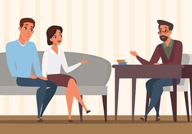

کارگاهها و وبینارها
مهارتهای زندگی
این کارگاه به شما کمک میکند تا مهارتهای مهم زندگی مانند مدیریت استرس، ارتباط مؤثر و تصمیمگیری درست را یاد بگیرید و در زندگی روزمره خود استفاده کنید.
اطلاعات بیشتر / ثبتنام

مشاوره قبل از ازدواج
کارگاه مشاوره قبل از ازدواج شامل آموزش مهارتهای ارتباطی، مدیریت تعارض و آمادگی روانی برای تشکیل خانواده سالم است و به زوجها کمک میکند تصمیمات آگاهانه بگیرند.
اطلاعات بیشتر / ثبتنام